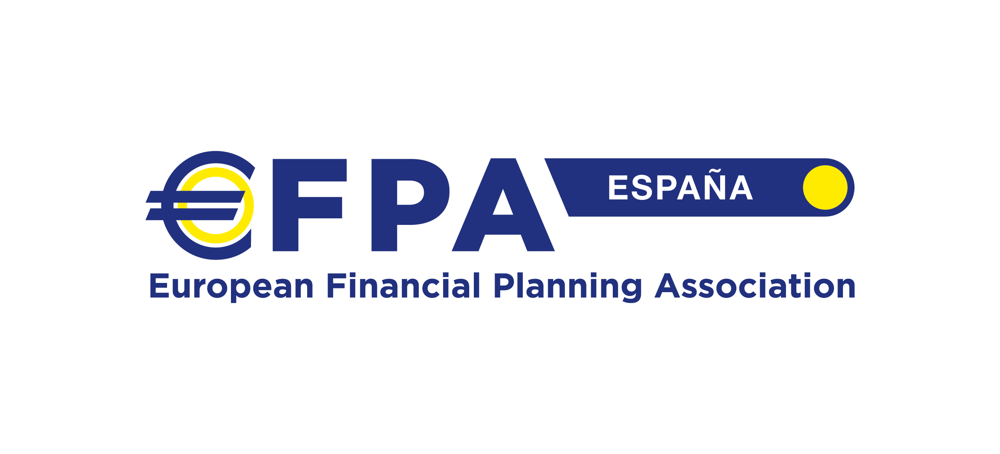
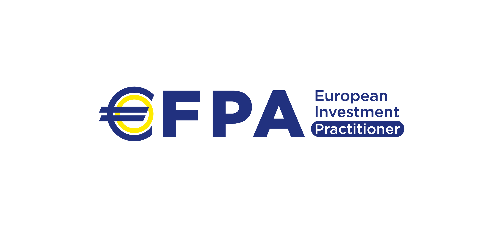
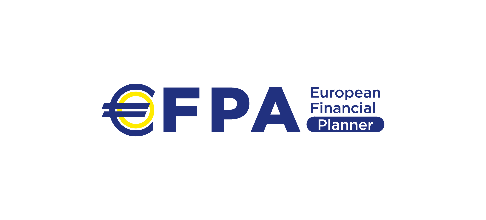

Preguntas frecuentes
¿Qué es EFPA?
La European Financial Planning Association Asociación -EFPA (o Asociación Europea de Planificación Financiera, si lo traducimos al español) es una asociación profesional que promueve la autorregulación dentro de la industria de los servicios financieros.

Su afán de autorregulación es debido fundamentalmente al notable crecimiento que ha experimentado este sector en los últimos años gracias a una mayor presencia de servicios financieros y de inversión en el mercado tales como la banca privada, personal y de particulares, la asesoría financiera, los family office, etc.
También las nuevas regulaciones que emanan del legislador europeo, principalmente a través de la reciente Directiva europea Markets in Financial Instruments Directive (MiFID II, según sus siglas en inglés), han hecho que sea necesario establecer una respuesta profesional basada en estándares tanto a nivel deontológico, como de capacitación y competencias de los propios profesionales que prestan alguno de estos servicios. Todo ello en aras de reforzar la protección de los usuarios bancarios y financieros, y con el objetivo final de conseguir un mercado único para la prestación de este tipo de servicios.
Por lo tanto, y para ofrecer las respuestas necesarias en este nuevo marco de regulación europea, las certificaciones que emite EFPA forman parte de los títulos asociados a distintas organizaciones y universidades que han acreditado el cumplimiento de los requisitos recogidos en la Guía Técnica que la CNMV aprobó en junio de 2017, en atención a lo que establece MiFID II. Algunos de ellos acreditan capacidad para asesorar e informar y otros solo para realizar labores de información, en función de la formación que imparten.
Pero EFPA no se queda ahí y también actúa como una plataforma independiente que agrupa, con su registro de certificados y miembros de la asociación, a los profesionales dedicados al asesoramiento y la planificación financiera personal dentro del espacio europeo.
¿Y EFPA España?
Es la delegación en España de esta Asociación y ya cuenta con más de 35.000 asociados desde que se constituyó por allá por el año 2000. Siendo, a día de hoy, la única asociación europea de nuestro país que vela por los intereses de los profesionales del asesoramiento y la planificación financiera personal.
¿Qué son las certificaciones profesionales que otorga EFPA?
La Asociación EFPA en España ofrece varios programas de certificación para los profesionales financieros que miden tanto sus conocimientos como sus competencias basándose en el ejercicio profesional y no meramente académico.
Estos programas formativos son evaluados por comités independientes y se otorgan por distintas instituciones de reconocido prestigio sin seguir una directriz comercial.
La mayor bondad de estas certificaciones profesionales, a mi juicio, es que se encuentran separadas y diferenciadas de los formadores evitando así los habituales conflictos de intereses.
A diferencia de lo que ocurre con otras titulaciones académicas es condición necesaria la formación continua para mantenerse profesionalmente actualizado. Como cabe esperar de una actividad profesional que implica un vertiginoso dinamismo.
El enfoque de estas certificaciones se basan en la realidad que constituye el ejercicio profesional dentro de la industria de servicios financieros de (especialmente en la asesoría y planificación financiera).
El programa de contenidos que se exige para superar los exámenes de EFPA son los mismos en toda Europa homogeneizando así la formación a nivel europeo. Actualmente la Asociación ofrece las siguientes certificaciones:
¿Qué niveles certifica EFPA con sus exámenes?
European Investment Assistant (EIA)
Donde el objetivo de la certificación (EIA) es acreditar al profesional, de los segmentos básicos de las redes comerciales de entidades financieras y aseguradoras, en el ámbito de la comunicación de información sobre los servicios que presta la entidad.
European Investment Practitioner (EIP)

Donde el objetivo de la certificación (EIP) es acreditar al profesional, de los segmentos básicos de las redes comerciales de entidades financieras y aseguradoras, para poder hacer frente a las presentes exigencias reguladoras con una base sólida de competencias bancarias y financieras.
European Financial Advisor (EFA)
Donde el objetivo de la certificación (EFA) es acreditar al profesional la idoneidad profesional para ejercer tareas de consejo, gestión y asesoría financiera a particulares en banca personal o privada, servicios financieros orientados al cliente individual y cualquier función profesional bancaria, de seguros o independiente, que implique la oferta de un servicio integrado de asesoría patrimonial y financiera.
European Financial Planner (EFP)

Donde el objetivo de la certificación (EFP) es acreditar al profesional la idoneidad profesional para ejercer tareas de planificación financiera personal integral de alto nivel de complejidad y volumen.
¿Para qué sirve la certificación profesional EIA, EIP, EFA y EFP?
Actualmente tanto a los asistentes de los asesores financieros (EIA), los propios los asesores financieros (EFA), gestores de patrimonio (EFA y EFP) y empleados de banca (EIP) les demandan una formación más transversal, global y continuada que les permita mejorar en los servicios financieros que prestan a sus clientes. Y disponer de cualquiera de estos niveles de certificación per se supone una ampliación permanente de los conocimientos necesarios para progresar profesionalmente en su carrera y ofrecer excelencia.
La certificación EIA sirve para prestar asistencia al profesional/les que desempeñe/en tareas en el ámbito del asesoramiento financiero, de forma que permite asegurar los conocimientos básicos necesario que el asistente del asesor/es tiene.
La certificación EIP sirve para reconocer a los profesionales financieros cualificados para que presten labores de información y asesoramiento como habitualmente hacen los empleados de banca (o gestores comerciales).
La certificación en asesoramiento EFA, por el contrario que las anteriores, te capacita para prestar un servicio integral de asesoramiento financiero a lo largo plazo siendo capaz de adaptarse a las necesidades personales, familiares, económicas y laborales de cada uno de los clientes.
Igualmente sirve para titulados en las licenciaturas o grados de Administración y Dirección de Empresas (ADE), Económicas, etc. que deseen especializarse para encontrar nuevas oportunidades profesionales en áreas tales como la asesoría financiera, el análisis y la consultoría financiera, la gestión patrimonial, la banca personal y la banca privada. O otros perfiles profesionales que operan en áreas próximas como son la contabilidad, la fiscalizad, el peritaje o la abogacía y que deseen adquirir nuevas competencias para aumentar su proyección profesional y empleabilidad.
Y, finalmente, el EFP te sirve para desarrollar una carrera profesional bien a través de una entidad financiera, hasta agencias o sociedades de valores y empresas de asesoramiento financiero (EAFI). También, si decides crear tu propia compañía de Asesoramiento Financiero, o incorporarte en una de ellas, actuarás con un alto grado de independencia y el cliente se convertirá en el eje de tu modelo de negocio en el que el objetivo será dar respuesta a sus necesidades globales y velar por sus intereses.
¿Qué diferencias hay entre las certificaciones de la asociación?
Bien, pues en función de la capacitación y competencias que queramos acreditar nos situaremos, o bien en el rango del EIA (para asistentes y/o personal que presta información a los clientes), o bien entre el EIP, EFA y EFP (en el caso del asesoramiento financiero y la gestión patrimonial de alto volumen). Siendo las dos opciones intermedias las de mayor calado entre los profesionales del sector ya que las diferencias, tanto como por arriba como por abajo son reducidas.
Es decir que si nos certificamos como EIP o, como con EFA, podremos prestar servicios de información a los clientes así como emitir consejos y recomendaciones, gestión y asesoría financiera a particulares en banca personal o privada, servicios financieros orientados al cliente individual y cualquier función profesional bancaria, de seguros o independiente.
Son por tanto los dos niveles de certificación (EIP y EFA) el objetivo del presente libro de exámenes. Obviamente mucha gente prefiere el EFA al EIP por su reconocido prestigio dentro del sector financiero europeo. Pero, sin embargo, dada la dificultad de este examen y, dado también que la CNMV ha autorizado en la certificación EIP de EFA como válida para asesorar (imagen siguiente):

muchos de los candidatos/as están optando por certificarse como Asesor Europeo (EFA) primero a través del examen EIP y, una vez que este se encuentra aprobado, EFPA te ofrece la posibilidad de acceder al EFA Completo a través de un examen “parcial” que sólo supone el 40% restante del contenido EFA Completo. Es como decir, que el EFA Completo se compone de,
EIP: incluye el 60% del contenido del EFA Completo
EFA Nivel II: incluye el 40% restante del contenido del EFA Completo.
¿Qué diferencias hay entre EIP y EFA?
Como hemos dicho más arriba, una de las acreditaciones más demandadas actualmente es la nueva certificación EIP, que de una forma resumida, incluye el siguiente programa de contenidos:
| Módulo 1 | Instrumentos y mercados financieros | 40,00% |
| Módulo 2 | Fondos y sociedades de inversión mobiliaria | 10,00% |
| Módulo 3 | Gestión de carteras | 12,50% |
| Módulo 4 | Seguros | 7,50% |
| Módulo 5 | Planes y fondos de pensiones | 5,00% |
| Módulo 6 | Fiscalidad | 10,00% |
| Módulo 7 | Cumplimiento normativo y regulador | 7,50% |
| Módulo 8 | Asesoramiento y planificación financiera | 7,50% |
La siguiente certificación más demanda, y ya consolidada en el mercado, es la certificación de asesor financiero europeo EFA. Este prestigio examen incluye el siguiente programa de contenidos:
| Módulo 1 | Instrumentos y mercados financieros | 25,00% |
| Módulo 2 | Fondos y sociedades de inversión mobiliaria | 10,00% |
| Módulo 3 | Gestión de carteras | 17,50% |
| Módulo 4 | Seguros | 7,50% |
| Módulo 5 | Pensiones y planificación de jubilación | 5,00% |
| Módulo 6 | Inversión Inmobiliaria | 5,00% |
| Módulo 7 | Crédito y financiación | 5,00% |
| Módulo 8 | Fiscalidad | 10,00% |
| Módulo 9 | Cumplimiento normativo y regulador | 7,50% |
| Módulo 10 | Asesoramiento y planificación financiera | 7,50% |
Como se aprecia en los programas EFPA anteriores, el temario del examen EFA incluye dos módulos más que el temario del examen EIP. Concretamente los módulos de Inversión Inmobiliaria y, Crédito y financiación. Asimismo, existen diferencias entre ambos exámenes en los contenidos de cada uno de los módulos aunque estos tengan el mismo nombre.
Por lo tanto podemos optar por empezar esta formación de forma parcial, es decir podemos acreditarnos como EIP y más tarde como EFA aprovechando lo común de los contenidos. De forma que el examen EIP (o de nivel I):
| Módulo | Contenidos | Peso | Nº Preguntas |
|---|---|---|---|
| Módulo 1 | Instrumentos y mercados financieros | 40,00% | 16 |
| Módulo 2 | Fondos y sociedades de inversión mobiliaria | 10,00% | 4 |
| Módulo 3 | Gestión de carteras | 12,50% | 5 |
| Módulo 4 | Seguros | 7,50% | 3 |
| Módulo 5 | Planes y fondos de pensiones | 5,00% | 2 |
| Módulo 6 | Fiscalidad | 10,00% | 4 |
| Módulo 7 | Cumplimiento normativo y regulador | 7,50% | 3 |
| Módulo 8 | Asesoramiento y planificación financiera | 7,50% | 3 |
| Total: | 100% | 40 |
EFPA España ya ha previsto esto y es por ello que ofrece una solución en la cual el aspirante se acredita primero como EIP y más tarde cabe la posibilidad de hacer un “curso puente2 -digamos- que le permitiría al alumno examinarse de aquellos contenidos que son exclusivos de la certificación EFPA. Este examen es conocido como examen de”nivel II” y es convocado por la Asociación 4 veces al año.
Además, la estructura de cada uno de estos exámenes es diferente como vemos a continuación:
Estructura examen EIP
El examen EIP consta de 40 preguntas tipo test. Es requisito responder, al menos, el 70% de las preguntas del examen correctamente (28 preguntas), para superar satisfactoriamente la prueba. Las respuestas incorrectas o en blanco no restan puntos. Duración del examen es de 1 hora y 30 minutos.
Estructura examen EFA nivel II
Constará de 2 partes:
La primera, un examen tipo test de 40 preguntas. Para aprobar, el requisito será el haber respondido bien al menos al 70% del examen (28 preguntas). Las respuestas incorrectas o en blanco no restan puntos. Duración de la primera prueba: 1 hora y 30 minutos.
La segunda parte, consistirá en la resolución de ejercicios prácticos sobre distintos aspectos contemplados en el temario EFA. Duración de la segunda prueba: 1 hora.
Deben aprobarse ambas partes.
Estructura examen EFA completo
Constará de 2 partes:
La primera, un examen tipo test de 50 preguntas. Para aprobar, el requisito será el haber respondido bien al menos al 70% del examen (35 preguntas). Las respuestas incorrectas o en blanco no restan puntos. Duración de la primera prueba: 1 hora y 30 minutos.
La segunda parte, consistirá en la resolución de ejercicios prácticos sobre distintos aspectos contemplados en el temario EFA. Duración de la segunda prueba: 1 hora.
Deben aprobarse ambas partes.
¿Necesito algún requisito para acceder a las acreditaciones profesionales de EFPA
EFPA exige unos requisitos mínimos y que estos van en función de qué certificación queramos obtener. A continuación se presenta la comparativa entre la certificación EIP y EFA:
Requisitos examen EIP
Disponer de titulación completa de estudios secundarios.
Carecer de antecedentes penales por delitos dolosos, no haber sido objeto de expulsión en colegio o asociación profesional y no haberle impuesto sanción firme por infracción grave en la CNMV.
Acreditar 6 meses de experiencia en el sector financiero.
Realizar la inscripción al examen, a través de la Web de EFPA, cumplimentando los datos requeridos, adjuntando CV, la última titulación académica obtenida y realizar la transferencia de los derechos de examen para finalizar el proceso (181,50 IVA incluido).
Requisitos examen EFA
Disponer de titulación completa de estudios secundarios.
Se requiere 1 año de experiencia para poder obtener la certificación EFA o bien, 6 meses, si el candidato ha realizado un curso de preparación en un centro Acreditado. Una vez, el candidato ha obtenido el APTO, sino dispone de la experiencia necesaria se le conserva el resultado durante 3 años, o hasta que demuestre haber obtenido la experiencia requerida y así poder darse de alta en la asociación.
Carecer de antecedentes penales por delitos dolosos, no haber sido objeto de expulsión en colegio o asociación profesional y no haberle impuesto sanción firme por infracción grave en la CNMV.
Realizar la inscripción al examen, a través de la Web, cumplimentando los datos requeridos, adjuntando CV, la última titulación académica obtenida y realizar la transferencia de los derechos de examen para finalizar el proceso (225 euros + 21% IVA).